Produced by tools/verify_ui.gd (windowed render pass, 1152×648). Every image is a real frame of the game, not a mock-up.
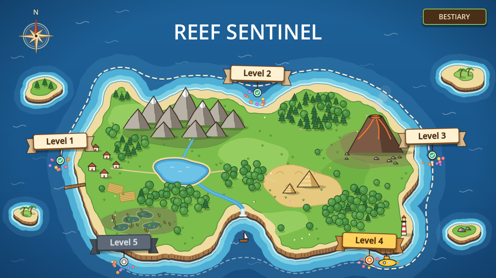
01 — World map. Three reef islands cleared and unlocked, two still locked; the sentinel sits on the route.
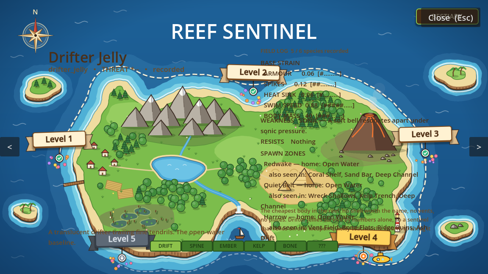
02 — Bestiary. Code-drawn open book: coral-green cover frame, parchment pages with stains and a shaded gutter, white diamond ornament. First recorded species.
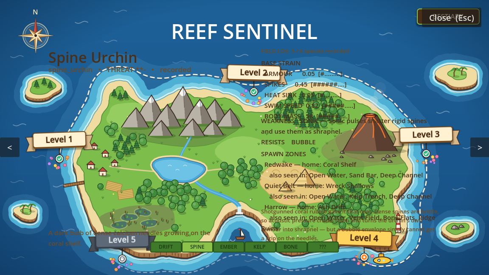
03 — Bestiary, second entry. Species art, stat block, weakness and spawn zones, all read from the same species table the enemies use.
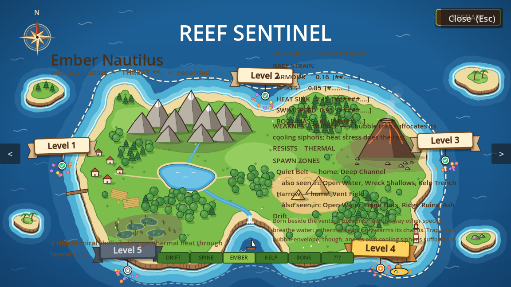
04 — Bestiary, third entry. Page navigation and the field-log counter.
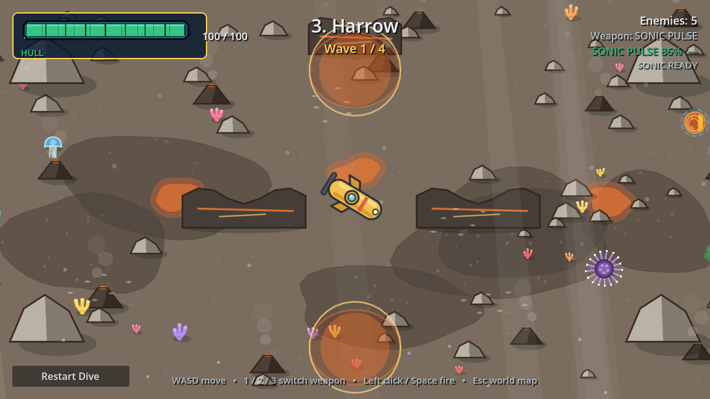
05 — Harrow, wave in progress. Volcanic-vent biome, obstacles, hull bar, weapon readout, effectiveness dial.
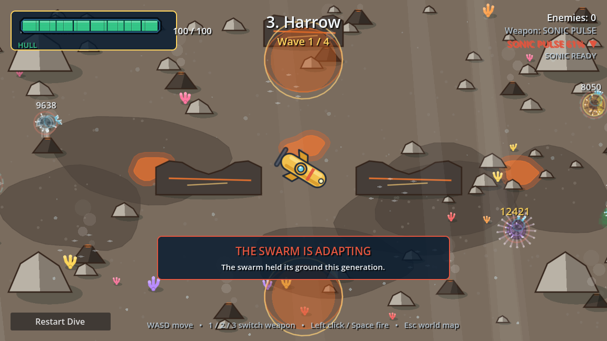
05b — Between-wave adaptation banner. Names the traits that moved this generation and what it means for the equipped weapon.
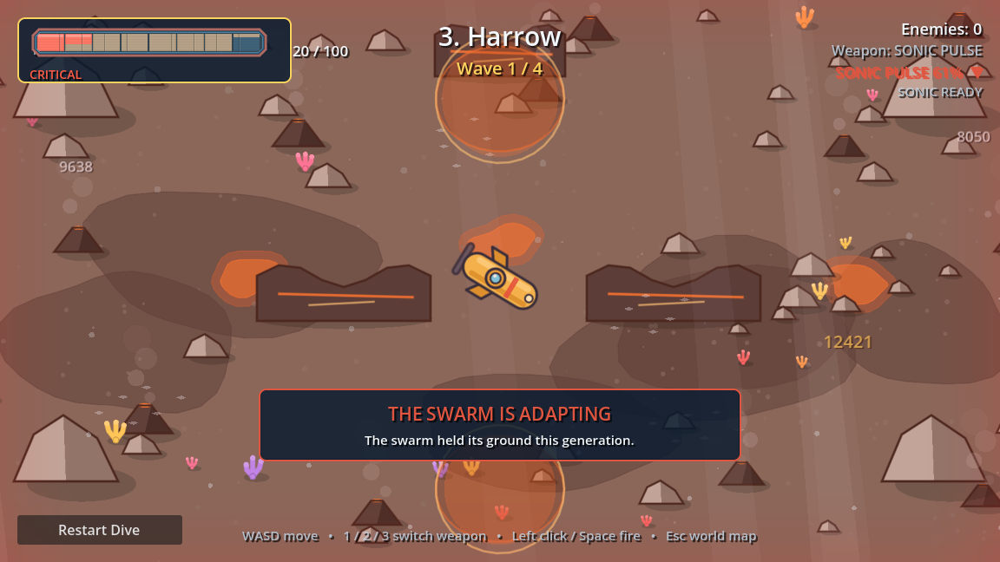
06 — Critical hull. Segmented hull bar in the red, with the screen-edge damage vignette.
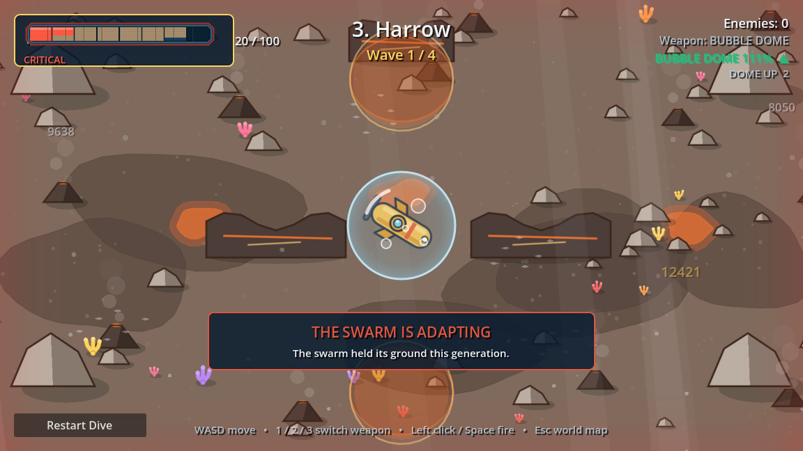
07 — Bubble Dome deployed. The defensive tool in action: it roots what swims into it and absorbs hits.
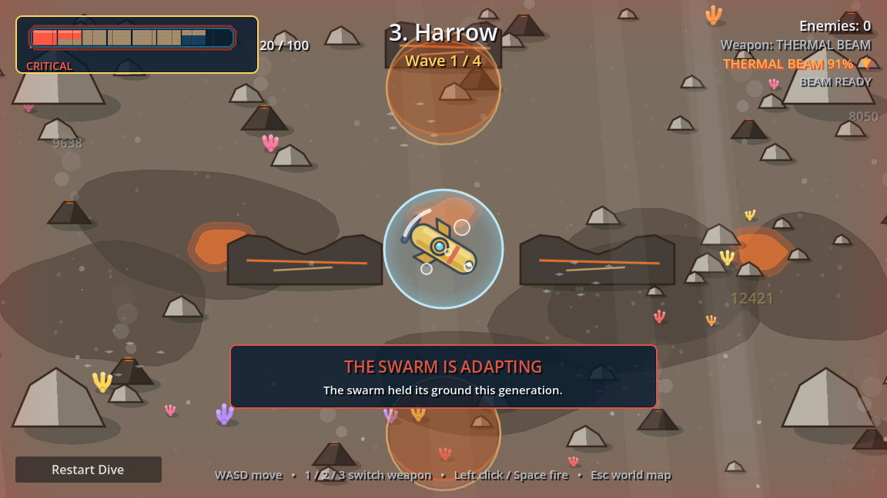
08 — Thermal Beam. Sustained beam with the heat dial; the beam is the burst weapon with an overheat cost.
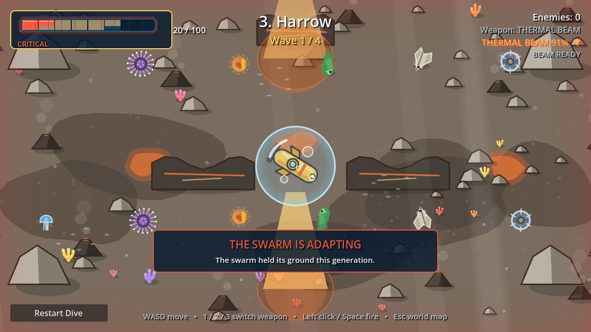
09 — Twelve invasives on screen. Distinct species art, wound tint, spikes grown by the evolved traits.
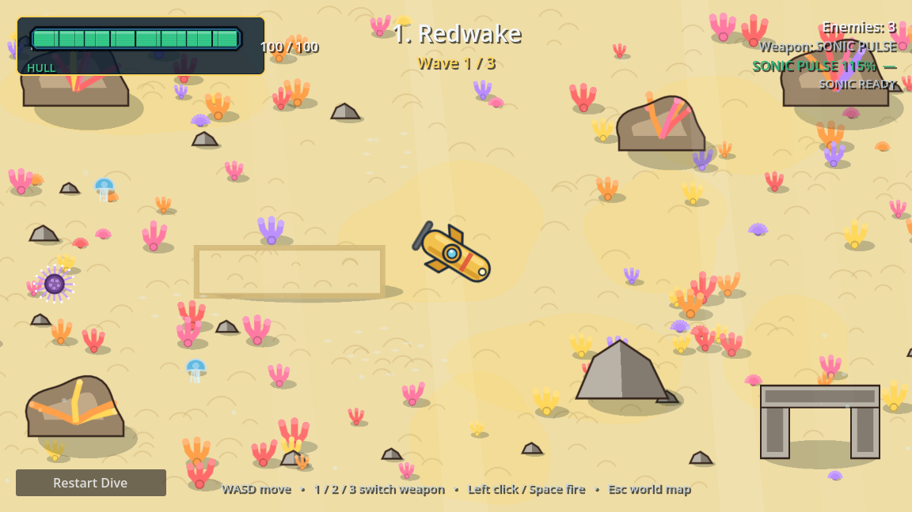
10 — Redwake. Shallow reef: open sand, coral bombies, bright water. The first island, two species.
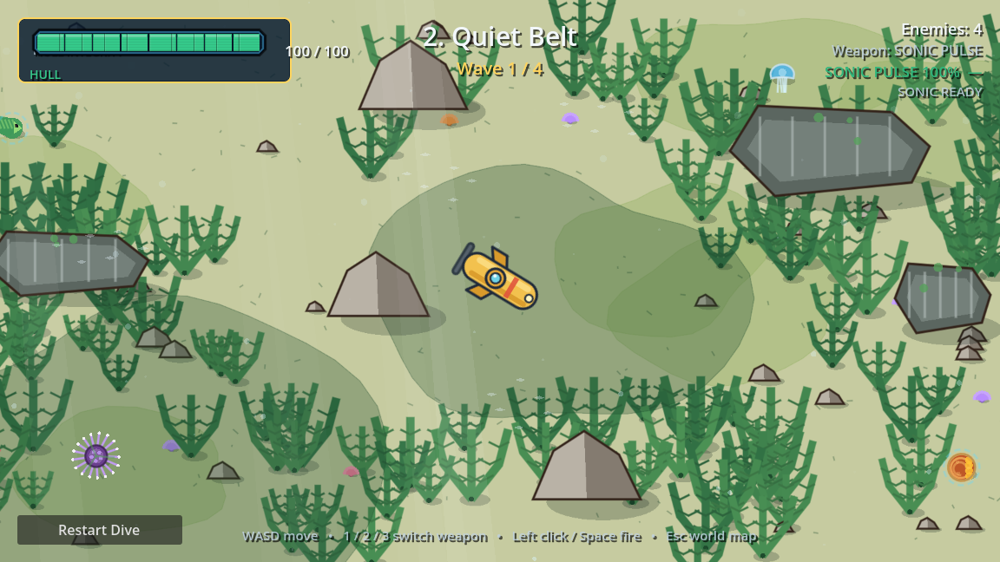
11 — Quiet Belt. Kelp belt: green palettes, kelp cover, a wreck, four species.
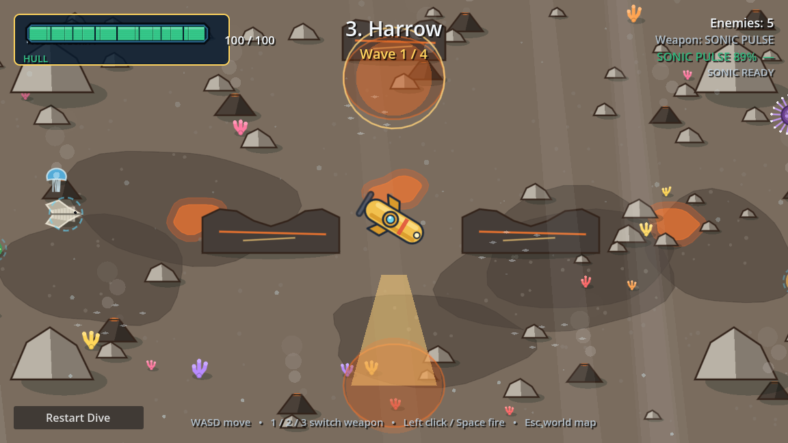
12 — Harrow. Volcanic vents: dark rock, ember drift and geysers, the full six-species roster.